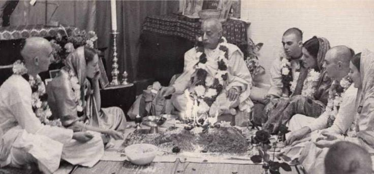

Was Śrīla Prabhupāda old fashioned?
Posted on : 24th May, 2025

It is not that Śrīla Prabhupāda was just old-fashioned and out of sync with contemporary "progressive" thought. Yet persons who are perhaps unwittingly "attracted by demonic and atheistic views" derived from the liberal humanistic culture in which they were raised, try to portray Shrila Prabhupāda as having been influenced by mundane ideas.
~ Śrīla Prabhupāda 's Outlook Was Not Mundane, Mothers and masters
Click here to follow Mothers and Masters whatsapp channel
Lionesses of Śrīla Prabhupāda, all matajis following Krsna consciousness please follow the above channel.